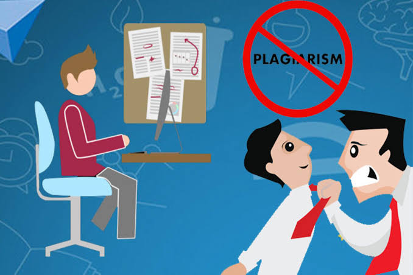

What are Plagiarism?
Plagiarism, the act of representing another person's work or ideas as your own, is a serious offense with far-reaching consequences across academic, professional, and creative fields. This page explores the nature of plagiarism, examines notable cases, and discusses international variations in intellectual property (IP) laws and their associated punishments.
Cases of Plagiarism and their Consequences?
AcademicPlagiarism
Many universities have strict policies. Students caught plagiarizing may face penalties ranging from failing grades to suspension or expulsion. The severity depends on the extent of the plagiarism and the student's prior record.
https://youtu.be/LD_1MKMG7aQ?si=71y_nIt5tSDg85Dq
Professional Plagiarism
In professional settings, plagiarism can lead to loss of credibility, job termination, and legal action. Journalists, authors, and researchers who plagiarize may face reputational damage and lawsuits for copyright infringement. A journalist copying an article without attribution could lose their job and face legal action from the original publisher.
http://sharevideo1.com/v/TnJUNWo4U3lUbDQ=?t=ytb&f=co
Political Plagiarism
Politicians caught plagiarizing speeches or writings can suffer significant damage to their careers and public image. This could lead to loss of public trust, electoral defeat, or legal repercussions, depending on the country and severity.
https://youtu.be/fmuAB5MqP0Y?si=1xOl0bexKvTl3YQX
Nature of the Punishment in Different Countries as per their IP Laws
• United States: Copyright infringement can lead to substantial financial penalties, including fines and damages. Criminal prosecution is possible in severe cases.
• United Kingdom: Similar to the US, copyright infringement is a serious offense with potential for fines and legal action. Academic institutions also have their own internal plagiarism policies with varying consequences.
• European Union: While the EU has directives on intellectual property, individual member states have their own laws and enforcement mechanisms. Penalties can range from fines to imprisonment, depending on the severity and jurisdiction.